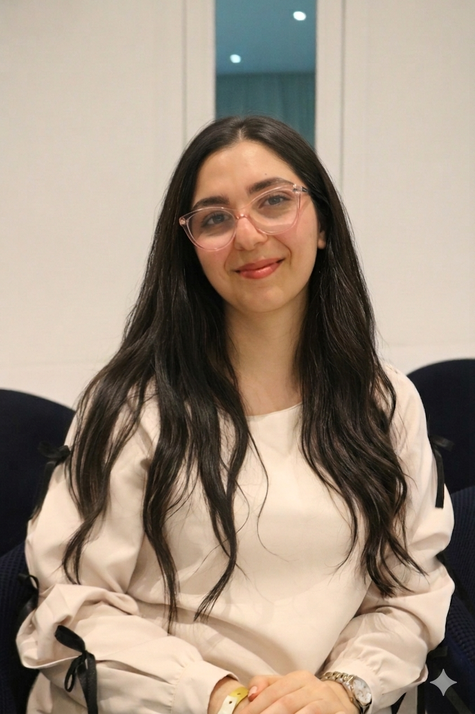

Eya Saad
Élève ingénieure en Génie Logiciel & Informatique décisionnelle
À la recherche d'un stage PFE de 5 à 6 mois · dès février 2027Du développement Full Stack à l'intelligence artificielle, je conçois des applications web et mobiles qui s'appuient sur la donnée pour répondre à de vrais besoins métier.

À propos
De la conception d'applications à l'exploitation intelligente des données, je transforme les défis technologiques en solutions innovantes.
Future ingénieure en Génie Logiciel et Informatique Décisionnelle à l'IIT de Sfax, je suis passionnée par l'intelligence artificielle, la data et le développement Full Stack. Mes projets m'ont appris à allier rigueur technique, esprit d'analyse et compréhension des enjeux métier pour concevoir des solutions innovantes et performantes. Je recherche aujourd'hui un stage de fin d'études (PFE) pour contribuer à des projets à fort impact, dans un environnement stimulant et tourné vers l'innovation.
Parcours académique
Vie associative & clubs
Membre de l'IEEE Computer Society, IIT
Visiter le siteMembre de l'Association de Recherche Scientifique et Innovation en Informatique (ARSII), IIT
Mes projets
Applications web, mobile et projets de data, avec les technologies utilisées.